MARKET FLOW RESEARCH
Independent research on crypto market microstructure. We study second-by-second order-book and order-flow data across major coins.
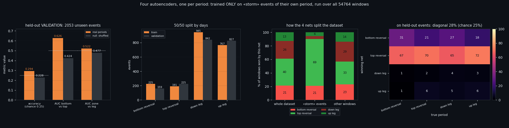
NetsSixteen Networks, One Working Answer — and the Price Benchmark That Nearly Killed It
We trained sixteen one-class autoencoders on Bitcoin order-book windows: four market states, and inside each state one network per phase of the price move. Each network saw only its own kind of window and nothing else — no negative examples at all. One thing out of sixteen works: inside a storm you can tell a bottom reversal from a top one. On half the data that looked like AUC 0.6264; measured properly on all 800 events it is 0.5928. Then a one-line price benchmark scored 0.8548 on the same question. This article is about what survives that, and where it survives.
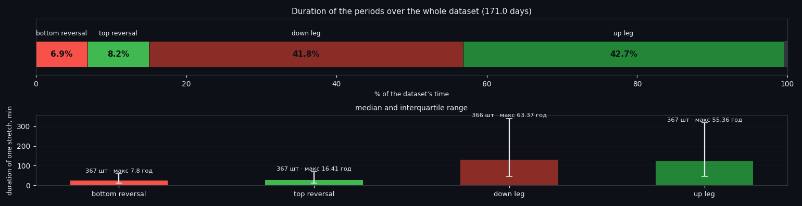
StatesDoes the Phase of a Move Change What the Order Book Looks Like?
We have four detectors of market state and a map of where price is in its move — reversal zones and the legs between them. Laying one over the other answers a question that sounds simple and is not: does the phase of a move change what a market state looks like? On 171 days of BTC the answer splits. The count of events barely moves — each class fires roughly in proportion to how long the phase lasts. What moves is their strength, and only for the quiet classes. And in one narrow place the order book finally beats price: telling a top from a bottom inside a storm.
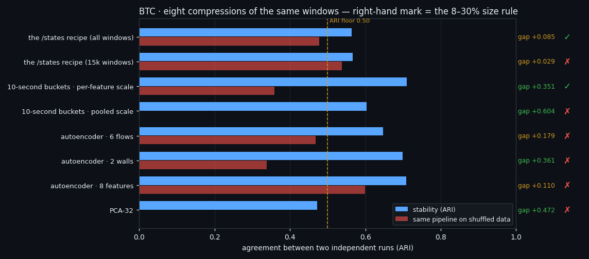
AutoencoderEight Ways to Compress 210 Seconds: the Autoencoder That Lost to PCA
We cut 170 days of per-second Bitcoin order-book data into 50,143 back-to-back windows and pushed them through eight different compressions — PCA, a convolutional autoencoder, and six variants of both — to see whether a network finds market structure a linear method misses. It does not. Its raw stability is the best in the table and most of that stability survives when the data is shuffled into noise, which means it was never structure at all.
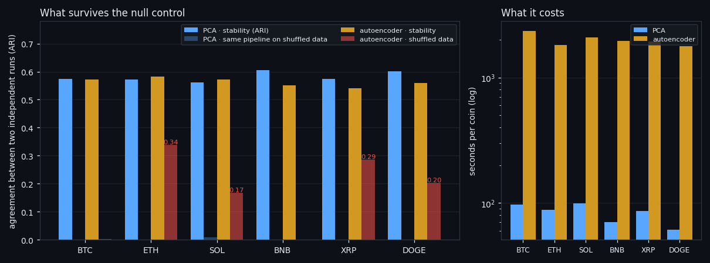
Market statesTwo Poles of Market Activity, Found Without a Teacher on Six Coins
We cut 122–141 days of per-second order-book data on 6 coins into 164,342 windows of 210 seconds, showed a clustering pipeline nothing but the eight order-book features, and asked whether the market falls into natural states. It does — two poles of flow activity with a wide grey zone between them — and the same pipeline run on shuffled data produces nothing, which is what makes the answer worth reporting. The walls turn out to be irrelevant to the split, and the autoencoder we brought in to beat PCA lost to it.
 Replication
ReplicationFour Market States, Found Twice by Two Independent Pipelines
Four market states, found twice by two pipelines that share no code. We wrote our research recipe down as an executable diary, then wrote a second implementation from that text alone — different seed, different block split, different network initialisation — and ran it over the same 54,764 windows of BTC order-book data. The states came back: 93.0% of windows landed in the same one (ARI 0.7726), and two independently trained detectors fire on the same 98.5% of windows. Where both fire, the next hour's price range is ×1.432 the median of the same day.
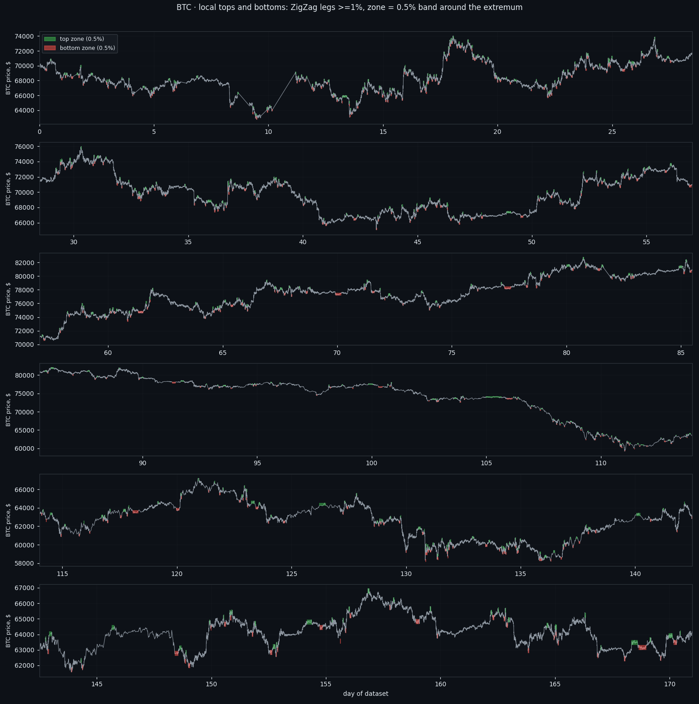
PivotsLocal tops and bottoms in the order book: what four trained models actually see
We marked every local top and bottom on 171 days of per-second Bitcoin order-book data — 734 of them, defined by a rule rather than by hand — and asked four trained market-state detectors whether they can see them. The zone itself is invisible. The moment of the extremum is not, and neither is 'an extremum within the next hour'. But a plain price range from the same window beats the order book at both, and the honest edge turns out to live somewhere else entirely: in telling a top from a bottom when price itself has nothing to say.
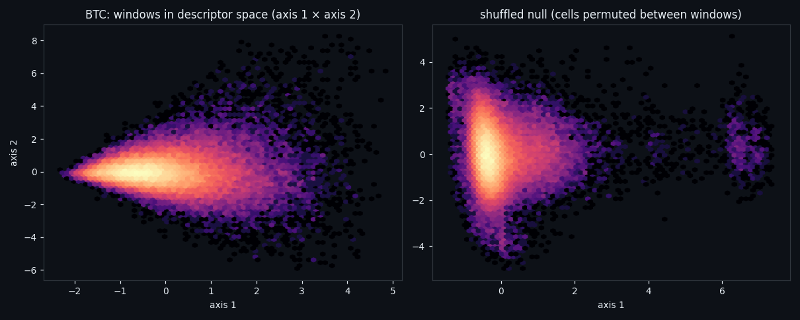
Window classesThere Are No Classes in the Order Book — Only One State That Survives
We locked a 210-second window to its own 1,680 numbers — eight order-book features, no norm, no price, no clock — and asked whether the market falls into classes. It does not: the gap statistic sits at 0.0017, silhouette matches noise, and at some K the shuffled null is more stable than the data. One state survives every check: 9.8% of windows where flows run hot and both walls thin out, followed by ×1.78 the usual hourly range.
 Event classes
Event classesEvent Classes Found Without a Teacher: 3 Survive, 60% Are Noise
We asked the order book to sort its own events into classes — 2,786 events, eight features, no price and no human labels. Out of 512 configurations only 5 produced anything stable, 60% of events belong to no class at all, and the three that do exist raise volatility while leaving direction at a coin flip.
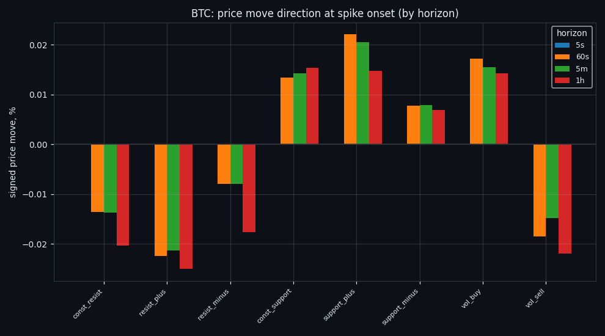
SignalsThe Alphabet of the Order Book: 6,561 Possible States, 333 Real Ones
We described the order book as a single word: eight features, three states each. Of the 6,561 words that could exist, only 333 ever occur — and when we tested that alphabet out of sample, it described the market well and predicted it poorly.
 Signal standard · BTC
Signal standard · BTCFrom Calm to Calm: a Standard for What Counts as a Signal (BTC)
We stopped defining market signals with a stopwatch. A signal is a continuous departure from calm, bounded by calm on both sides — the market decides where it starts and ends. Here is the standard, applied second by second to 167 days of BTC, with every event classified and located on the price path.
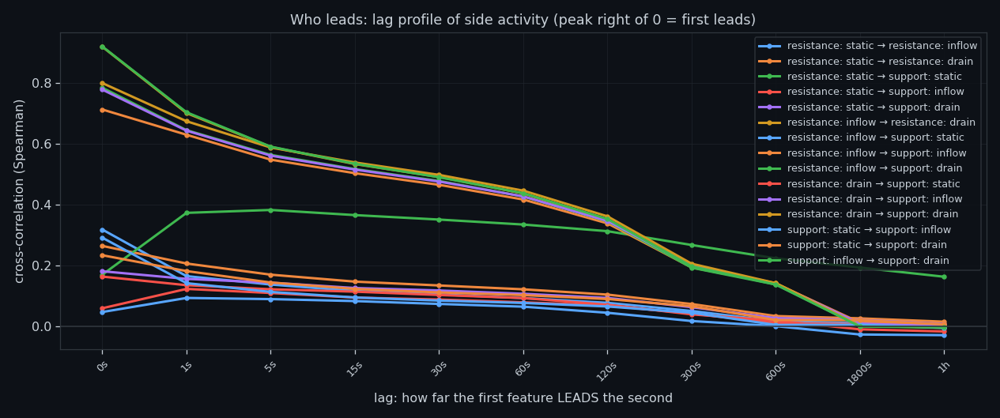
Side vs sideSide Against Side: Resistance and Support Compared
We put all six order-book features grouped into the resistance side and the support side into one study and asked how the pieces relate, which one leads, and what the combination predicts. Same boundary as always: it speaks about size, not side.
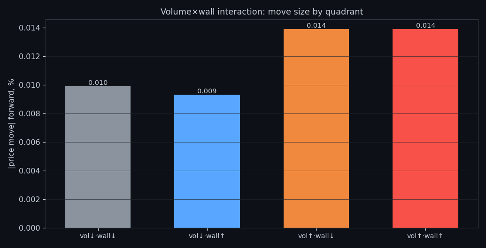
Flow vs wallFlow Against the Wall: When Volume Meets Resting Liquidity
We put executed volume hitting the resting wall on the opposite side into one study and asked how the pieces relate, which one leads, and what the combination predicts. Same boundary as always: it speaks about size, not side.
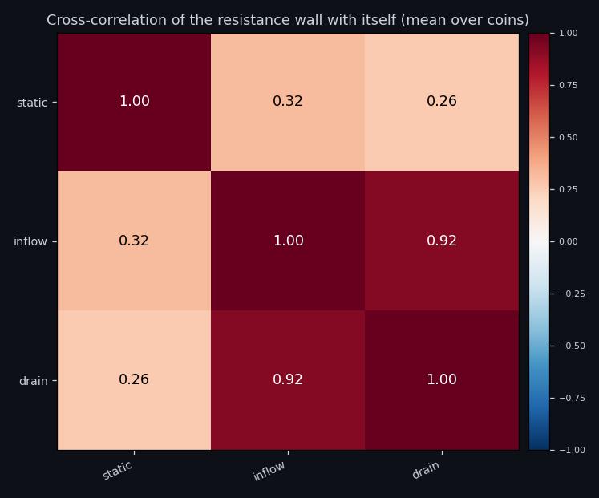
Wall lifecycleThe Life of a Sell Wall: Standing, Growing, Thinning
We put the three phases of the same sell-side wall — how much stands there, what arrives, what leaves into one study and asked how the pieces relate, which one leads, and what the combination predicts. Same boundary as always: it speaks about size, not side.
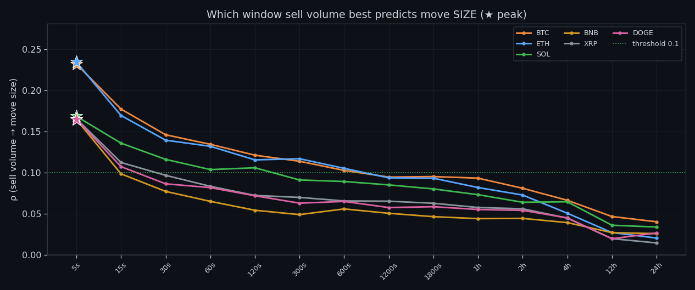
Sell volumeExecuted Sell Volume, Measured Alone
We isolated executed sell volume — one feature, no partner, no composite — and measured what it predicts second by second across six coins. The answer is the size of the next move, never its side.
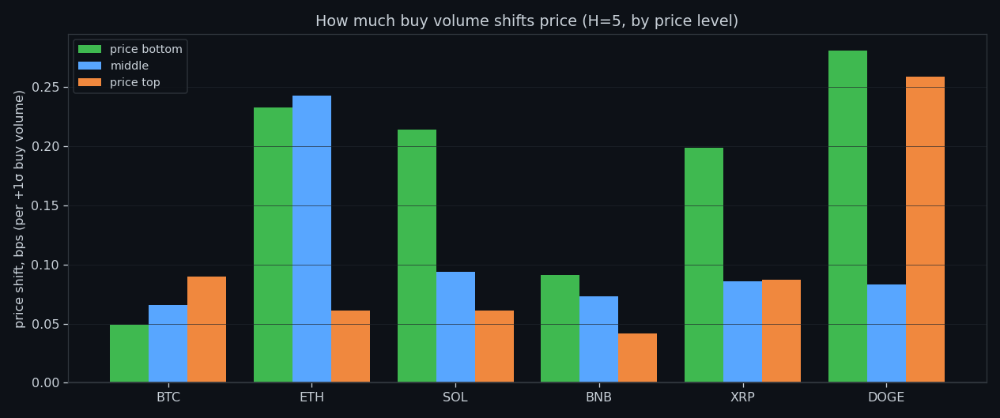
Buy volumeExecuted Buy Volume, Measured Alone
We isolated executed buy volume — one feature, no partner, no composite — and measured what it predicts second by second across six coins. The answer is the size of the next move, never its side.
 Buy drain
Buy drainDrain Out of the Buy Wall: Liquidity Leaving Before the Move
We isolated drain out of the buy wall — one feature, no partner, no composite — and measured what it predicts second by second across six coins. The answer is the size of the next move, never its side.
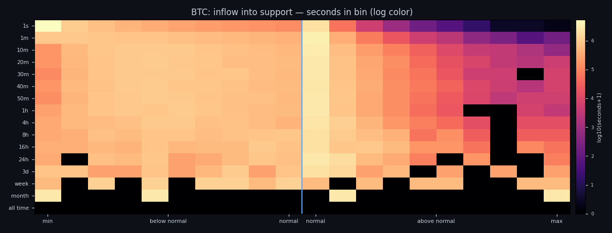
Buy build-upBuild-Up Into the Buy Wall: What Arriving Liquidity Predicts
We isolated build-up into the buy wall — one feature, no partner, no composite — and measured what it predicts second by second across six coins. The answer is the size of the next move, never its side.
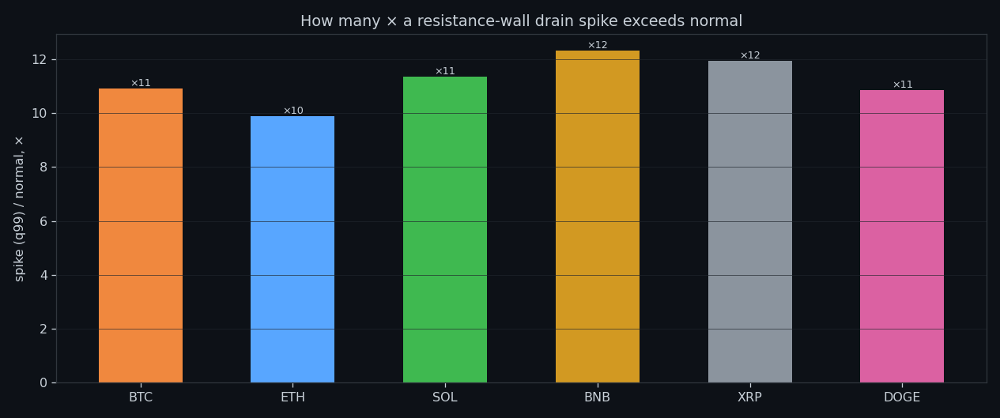
Sell drainDrain Out of the Sell Wall: Liquidity Leaving Before the Move
We isolated drain out of the sell wall — one feature, no partner, no composite — and measured what it predicts second by second across six coins. The answer is the size of the next move, never its side.
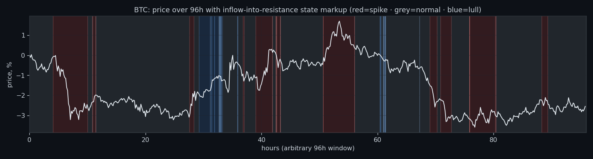
Sell build-upBuild-Up Into the Sell Wall: What Arriving Liquidity Predicts
We isolated build-up into the sell wall — one feature, no partner, no composite — and measured what it predicts second by second across six coins. The answer is the size of the next move, never its side.
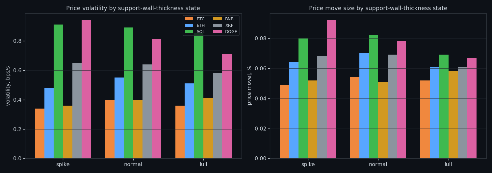
Buy wallThe Resting Buy Wall, Measured Alone
We isolated the resting buy wall — one feature, no partner, no composite — and measured what it predicts second by second across six coins. The answer is the size of the next move, never its side.
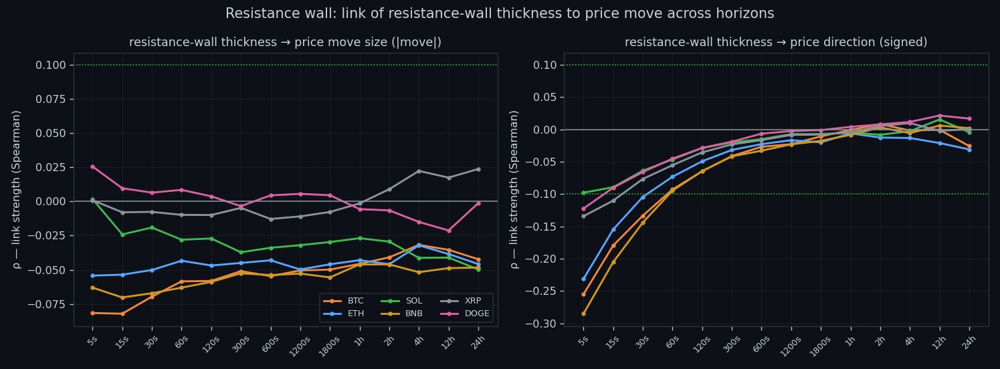
Sell wallThe Resting Sell Wall, Measured Alone
We isolated the resting sell wall — one feature, no partner, no composite — and measured what it predicts second by second across six coins. The answer is the size of the next move, never its side.
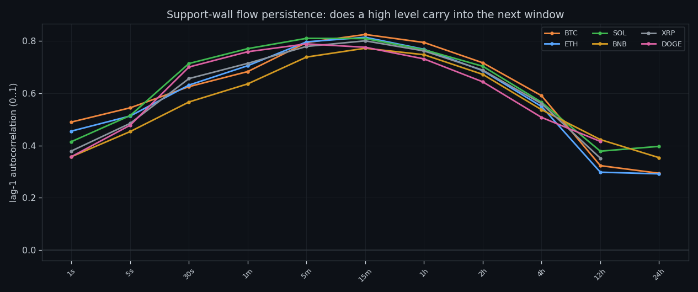
Support cycleThe Support Cycle: Liquidity Arriving vs Leaving
We measured the same buy-side wall growing and thinning second by second across six coins, and asked the only question that matters: does it tell you anything about what happens next? It does — about size, not direction.
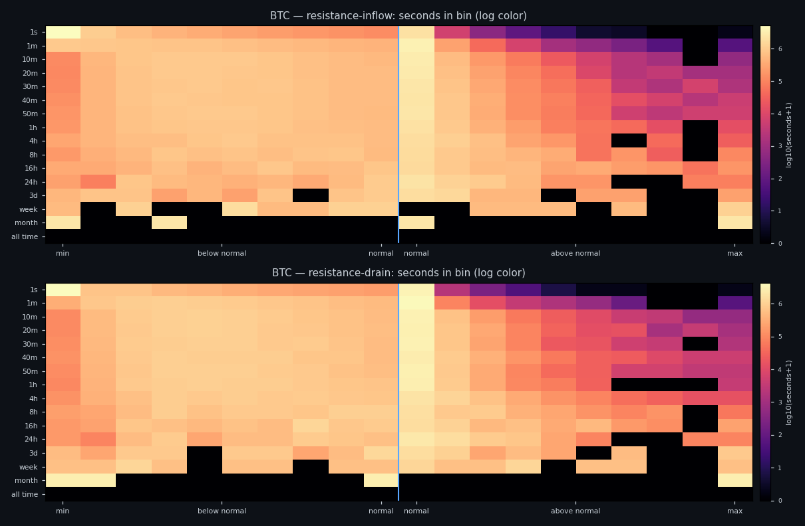
Resistance cycleThe Resistance Cycle: Liquidity Arriving vs Leaving
We measured the same sell-side wall growing and thinning second by second across six coins, and asked the only question that matters: does it tell you anything about what happens next? It does — about size, not direction.
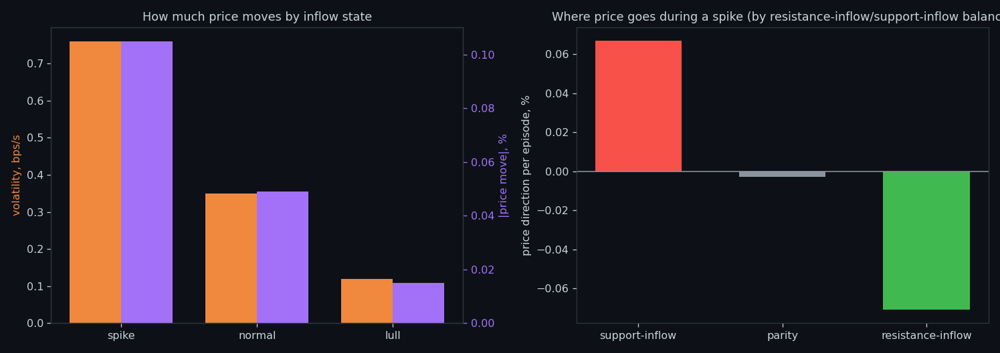
InflowLiquidity Arriving: What a Growing Wall Says Next
We measured fresh resting liquidity arriving into the book second by second across six coins, and asked the only question that matters: does it tell you anything about what happens next? It does — about size, not direction.
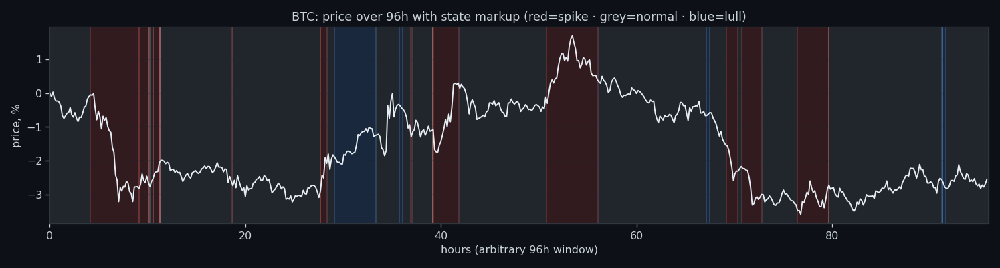
DrainLiquidity Pulled: What Happens When a Wall Drains
We measured resting liquidity being pulled away from the book second by second across six coins, and asked the only question that matters: does it tell you anything about what happens next? It does — about size, not direction.
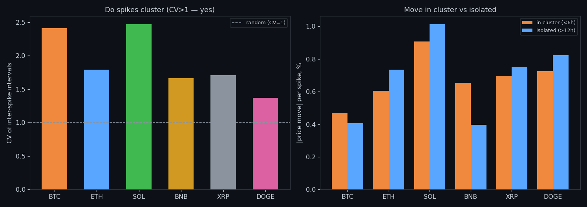
WallsThe Wall That Goes Quiet: What Resting Liquidity Predicts
We measured resting limit liquidity sitting on both sides of the book second by second across six coins, and asked the only question that matters: does it tell you anything about what happens next? It does — about size, not direction.
 About
AboutAbout Market Research Lab — What We Collect and Why
Most market commentary is storytelling. We built something testable instead: 166 days of second-by-second order-book data across six coins, and a rule that nothing gets published unless it survives out-of-sample.
 Volume
VolumeVolume Is the Fuel — Not the Steering Wheel
Everyone asks whether volume pushes price up or down. We measured it second-by-second on six coins. The honest answer surprises people.
Order flow predicts how much, not which way
Across six coins, flow surges line up with bigger moves — but not their direction. What that means for anyone trading the tape.